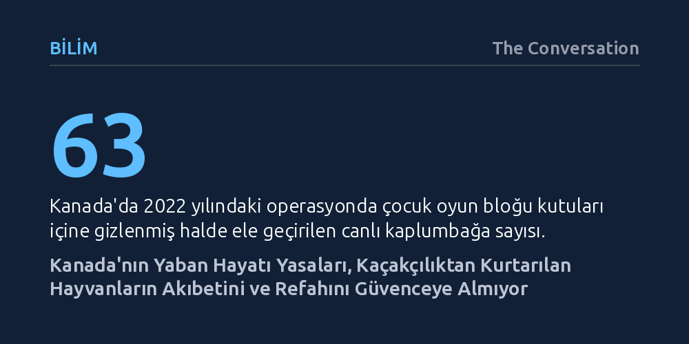

BILIM · The Conversation · 2026-10-19
Kanada'da kaçakçılardan kurtarılan yaban hayvanlarının akıbeti, mevcut mevzuatın refah ve şeffaflık zorunluluğu içermemesi nedeniyle belirsizliğini koruyor. Otuz yılı aşkın süredir güncellenmeyen yasa, el konulan canlıları eşya statüsünde bırakarak akredite barınak ve kamuya açık denetimden yoksun kılıyor.
Yaban hayatı kaçakçılığıyla mücadelenin yalnızca hayvanları sınırda ele geçirmekle bitmediğini, sonrasındaki bakım, refah ve şeffaf takibin de koruma zincirinin vazgeçilmez bir parçası olduğunu gösterir.

2022 yılında Kanada sınır muhafızları ile Çevre ve İklim Değişikliği Bakanlığı (ECCC) ekipleri, Çin'den gönderilen ve gümrük beyannamesinde çocuk oyun blokları olarak gösterilen şüpheli bir kargoyu durdurdu. Paketin incelenmesi, Calgary'de yaşayan ve internet üzerinden satış yapmayı planlayan bir kişinin yurt dışından kaçak yollarla getirdiği 63 canlı kaplumbağa ile 58 kaplumbağa yumurtasının ele geçirilmesini sağladı.
Operasyon başarılı bir el koyma gibi görünse de sonrasındaki süreç sistemin karanlık noktalarını gözler önüne serdi. Calgary Hayvanat Bahçesi kaplumbağaların yalnızca ikisini bünyesine kabul etti; kalanlar Ontario'daki bir sürüngen sığınağına sevk edildi, yumurtalar ise itlaf edildi. İlk yerleştirmenin ardından bu canlılara ne olduğuna dair kamuoyuna hiçbir bilgi verilmedi; çünkü yürürlükteki Kanada yasaları yetkililere el konulan yaban hayvanlarının akıbetini şeffaf biçimde raporlama yükümlülüğü getirmiyor.
Yaban hayatı kaçakçılığı, hayvanların doğal ortamlarından koparılmasının ekolojik dengede açacağı yaraları ya da canlıların refahını zerrece önemsemeyen, bütünüyle kâr hırsına dayalı küresel bir suç alanıdır. Canlılar çoğu zaman acımasız yöntemlerle doğal yaşam alanlarından koparılmakta, havalandırmasız daracık kaplara istiflenerek egzotik evcil hayvan pazarlarına, yol kenarı gösterilerine veya yasa dışı üretim tesislerine ulaştırılmak üzere kıtalararası sevkiyatlara maruz bırakılmaktadır.
Yaban hayvanlarının rehabilitasyonu ve doğaya yeniden kazandırılması üzerine çalışan uzmanlar, bu sürecin baştan sona devasa bir ızdıraba yol açtığına dikkat çekiyor. Kanada'nın da 185 taraf ülkeden biri olduğu Nesli Tehlike Altında Olan Yabani Hayvan ve Bitki Türlerinin Uluslararası Ticaretine İlişkin Sözleşme (CITES), yasa dışı ticareti engellemeyi ve ticareti izlenebilir kılmayı amaçlasa da uygulamada kurtarılan hayvanların tek tek yaşam kalitesini güvence altına alacak ayrıntılı bir denetim mekanizması barındırmıyor.
El konulan hayvanların fiili bakımı genellikle hayvanat bahçelerine ya da özel barınaklara devredilmektedir. Kanada'nın yürürlükteki icra politikası, kurtarılan canlının 'güvende olacağı ve iyi bakılacağı' bir yere sevk edilmesini öngörse de bu bakımın kalitesine, sınırlarına ve devir sonrasındaki takibine dair hiçbir nesnel ölçüt belirlemiyor.
Çevre Bakanlığı hayvanat bahçeleri ve barınaklarla kurulan ortaklıklara güvenmekle birlikte, bu tesislerin taşıması gereken asgari yeterlilik ve akreditasyon koşulları yasalarda veya icra kurallarında tanımlanmış değildir. Dahası, hayvanların hangi tesise ne gerekçeyle teslim edildiği ve akıbetlerinin ne olduğu kamu denetimine açılmamaktadır. Yetkililerin el konulan canlıların nihai varış noktasını kamuoyuna resmen açıkladığı son federal örneğin 2022'deki kaplumbağa vakasında kalmış olması, şeffaflık boşluğunun boyutunu açıkça göstermektedir.
Kanada'nın yaban hayatı ticaretini düzenleyen temel federal mevzuat olan WAPPRIITA, 1992 yılında yürürlüğe girdi. 2009'da kabul edilen ve 2017'de uygulanmaya başlanan değişiklikler ise yalnızca para cezalarını ve adli yaptırım güçlerini artırmakla yetindi. Yasa, sınır geçişlerini ve eyaletler arası nakliyatı denetim altına alsa da el konulan hayvanların sonraki yaşamına ve refah ilkelerinin karar alma süreçlerine nasıl dâhil edileceğine neredeyse hiç değinmiyor.
Mevzuatın dili de günümüzün bilimsel ve etik yaklaşımlarının oldukça gerisindedir; yasa metninde el konulan canlılar zaman zaman birer 'şey' olarak anılmakta, bu da acı çekme kapasitesine sahip duyarlı varlıkları adeta bertaraf edilebilir bir mala indirgemektedir. WAPPRIITA için öngörülen on yıllık periyodik incelemeler cezalarla kısıtlı tutulmamalı; el konulan canlıların refahını önceleyen yasal tanımlar, kabul eden tesisler için akreditasyon zorunluluğu ve kamuya açık şeffaf bir izleme sistemi gecikmeksizin yasaya eklenmelidir.